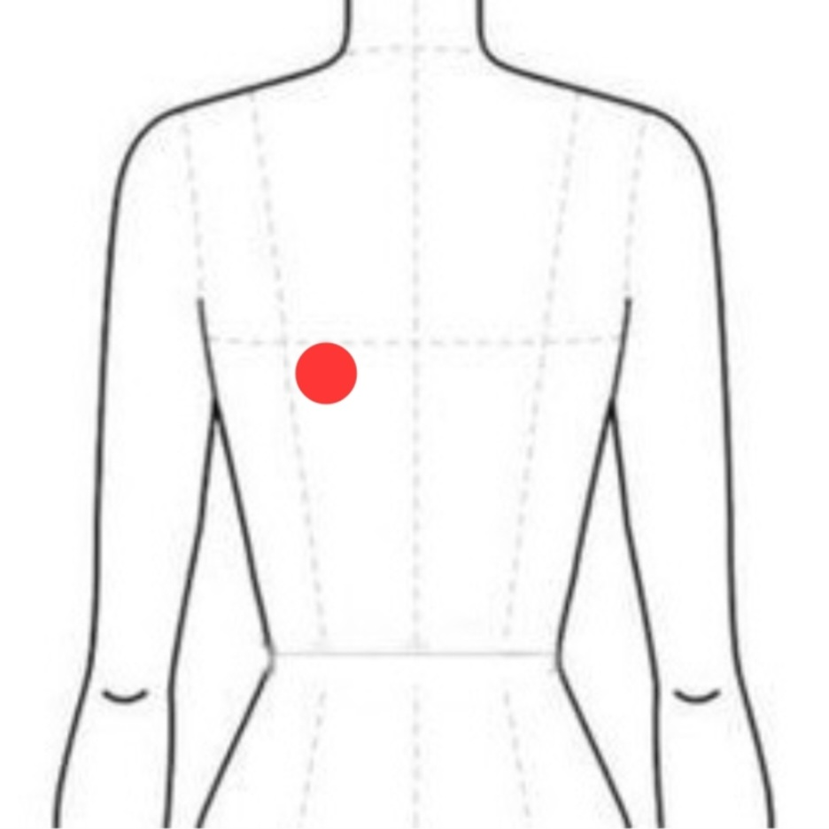

병원용 청진 데이터로 학습한 AI가 스마트폰 녹음을 분석해 호흡음의 이상 징후를 찾아드려요. 의학적 진단을 대신하진 않지만, 병원에 가기 전 참고할 첫 신호가 되어줄 거예요.
청진기 없이, 스마트폰 마이크로 흉부에서 5초간 호흡음을 녹음해요.
스마트폰 마이크 특성에 맞춰 보정한 뒤, 학습된 모델이 호흡 패턴을 분석해요.
정상/이상 여부와 확률을 시각화해서 바로 확인할 수 있어요.
이 분석은 참고용 스크리닝 도구예요. 이상 징후가 감지되면 반드시 호흡기내과 등 의료 전문가의 진료를 받아주세요.

등 위쪽, 어깨뼈 아래 빨간 점 부근이에요. 옷 위가 아닌 맨살에 마이크 부분을 밀착해 주세요.
흉부에 스마트폰을 가볍게 대고, 평소 호흡으로 15초간 녹음해주세요. 5초씩 3개 구간으로 나누어 각각 분석한 뒤 종합 결과를 보여드려요.
조언을 불러오는 중이에요...
이 결과는 의학적 진단이 아닌 참고용 스크리닝이에요.